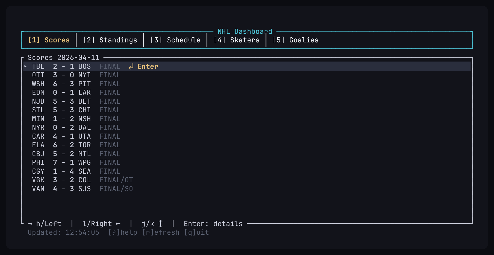
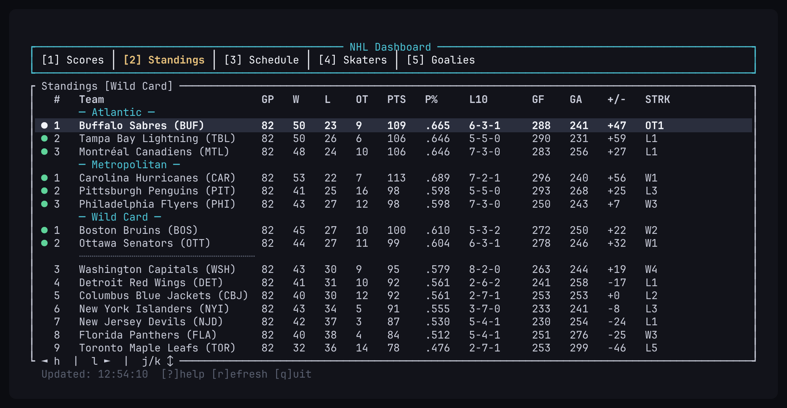
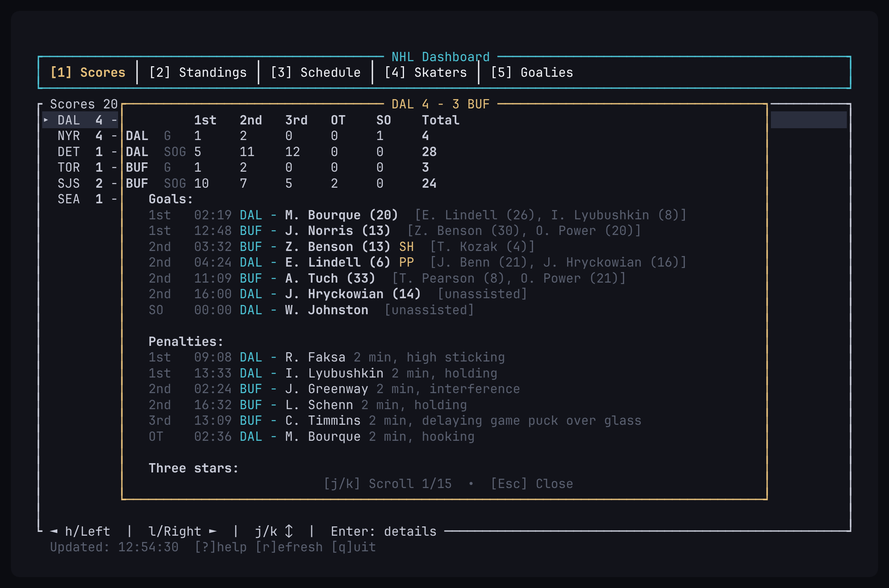

$ nhl-tui
Live scores, the wild card race, the schedule, and the scoring leaders. Pick a game and get the whole boxscore, period by period. No API key. No signup.
$ nhl-tui --install
$ curl -fsSL https://tui.jp305.dev/nhl-tui/install.sh | shDrops a single binary in ~/.local/bin. Verifies its checksum. Then run nhl-tui.
$ nhl-tui --show scores # fig. 01

fig. 01 — a night's scores. Press Enter on any game.
$ nhl-tui --tabs
- scores
- Every game on a given day, live or final. Step by day or week, or jump straight to a date.
- standings
- By division, conference, league — or the wild card race with the playoff cut line drawn in.
- schedule
- The week ahead, grouped by day, start times in your own timezone.
- skaters
- Leaders in points, goals, assists, plus-minus.
- goalies
- Leaders in wins, goals-against average, save percentage, shutouts.
- --team TOR
- Your team stays highlighted wherever it appears.
$ nhl-tui --show wildcard # fig. 02

fig. 02 — the dotted line is the playoff cut. Green marks a team holding a spot.
$ nhl-tui --show boxscore # fig. 03

fig. 03 — goals and shots by period, every goal and assist, penalties, the three stars.
$ nhl-tui --keys
| key | does |
|---|---|
| j k | move the selection |
| h l | previous / next day, or cycle category |
| H L | jump a week |
| n p | next / previous day with games |
| key | does |
|---|---|
| d | jump to any date |
| t | back to today |
| Enter | open the boxscore |
| ? q | help, quit |
$ nhl-tui --install --alt
homebrew
brew install jp30566347/tap/nhl-tui
arch, omarchy, any pacman distro
# build and install a real package
git clone https://github.com/jp30566347/tui
cd tui/nhl-tui && makepkg -sifrom source
cargo install --git https://github.com/jp30566347/tui nhl-tui
download a binary
# pick your platform github.com/jp30566347/tui/releases
Static musl builds for x86-64 and ARM Linux, native builds for Intel and Apple silicon Macs. SHA-256 beside every archive. A Windows zip is built too, but never run on Windows — treat as untested.
$ nhl-tui --sources
| what | source | refresh |
|---|---|---|
| scores | the NHL's own public API | 30 s |
| standings, schedule | same | 5 min |
| leaders | same | 5 min |
Public and keyless — nothing to configure. Only stale feeds are refetched. Renders to stderr, so stdout stays free.